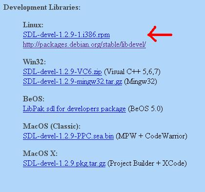
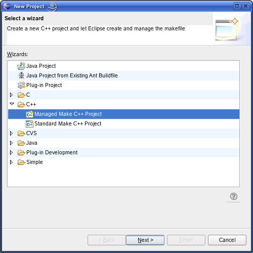
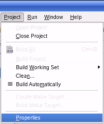
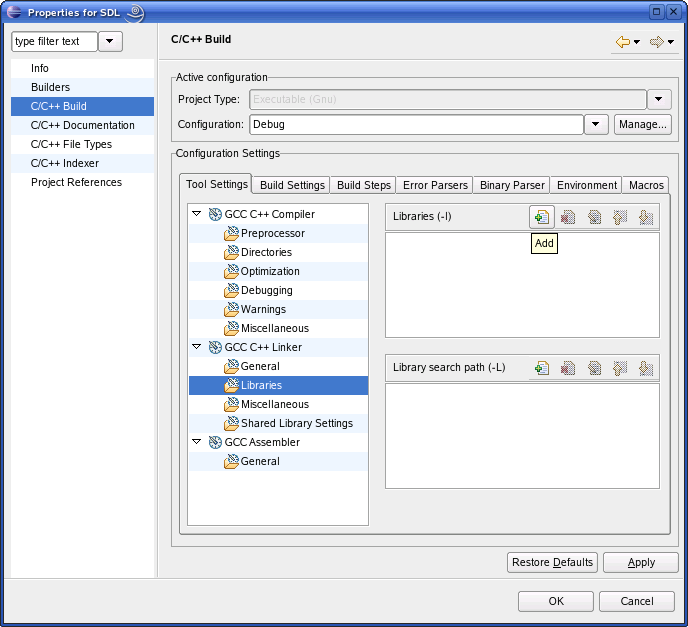
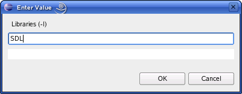

由于目前基于Linux的系统种类繁多，本教程可能并不适用于您的Linux系统。试试阅读一下
SDL Linux FAQ
。如果您使了浑身解数仍不能解决问题，请
联系我（译者注：这里指原作者，请用英文联系）
我会试着添加针对此发行版的特别修正。
以下是在不同情况下，安装SDL的方法：
1)新建一个Managed Make C++ Project:
2)当你命名了新建的项目并完成所有新建操作后，打开项目的属性：
3)进入C/C++ Build菜单，然后找到Libraties子菜单。 然后单击Add：
4)然后粘贴如下内容：
5)在你的项目中新建一个源码文件，并粘贴如下代码：
以下是在不同情况下，安装SDL的方法：
| 使用Ubuntu的用户 |
推荐使用内置的包管理器，打开方式是系统→管理→新立得软件包管理器。打开后搜索libsdl1.2-dev，这是SDL的开发包。如果找到了，单击它开始安装。 |
| 安装了“Advanced Packaging Tool”的用户 |
输入命令apt-get install libsdl1.2-dev libsdl-image1.2-dev libsdl-mixer1.2-dev libsdl-ttf2.0-dev您需要root权限执行此操作，所以需要使用 su或sudo命令。 |
| 安装了“Yellow dog Updater, Modified”的用户 |
输入命令yum install SDL-devel SDL_mixer-devel SDL_image-devel SDL_ttf-devel和使用apt-get一样，您需要有root权限。 |
| 使用基于RPM发行版的用户 |
您需要SDL RPM开发包， 你可以在SDL的官方网站上找到它们，点此进入下载页。 
向下滚动到Development Libraries部分，下载Linux开发包。 接下来启动RPM，使用它完成安装。 |

2)当你命名了新建的项目并完成所有新建操作后，打开项目的属性：

3)进入C/C++ Build菜单，然后找到Libraties子菜单。 然后单击Add：

4)然后粘贴如下内容：
SDL

5)在你的项目中新建一个源码文件，并粘贴如下代码：
#include "SDL/SDL.h"
int main( int argc, char* args[] )
{
//启动SDL
SDL_Init( SDL_INIT_EVERYTHING );
//退出SDL
SDL_Quit();
return 0;
}
6)现在保存并编译工程，如果没有出错，你就成功了，否则，请查看前面的步骤，确保没有跳过任何一步。